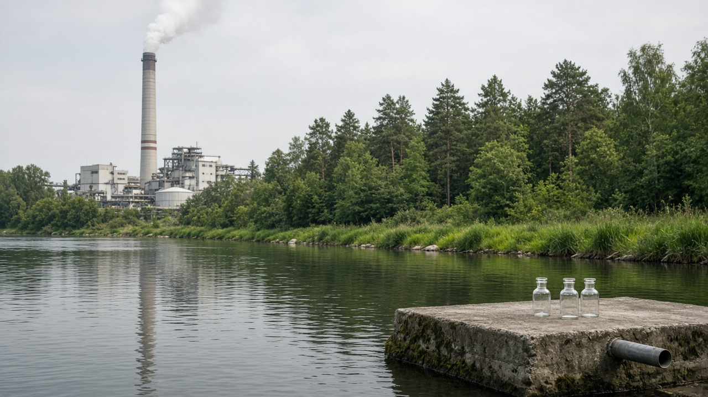
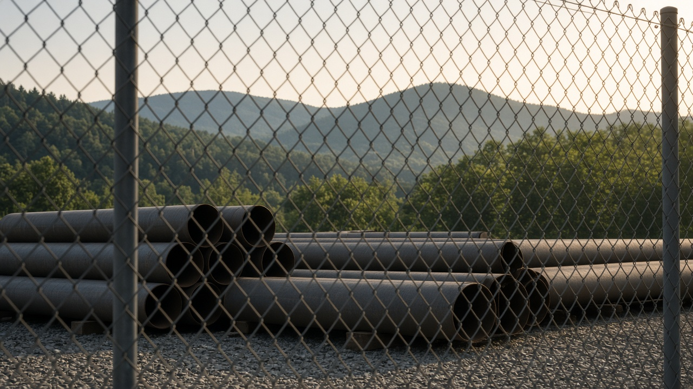

Corporate Environmental Responsibility and Disclosure
Published on August 20, 2026

Corporate environmental responsibility is the set of practices through which firms measure, reduce, and remedy their impacts beyond the minimum they think they can ignore. Disclosure is the public reporting of emissions, water, waste, land, and supply-chain risk, whether voluntary or mandated. Markets and regulators use that information for credit, procurement, and liability. Without comparable metrics, reports become narratives that highlight tree-planting while omitting core process emissions and contractor sites.
Mandatory disclosure, third-party assurance, and standardized indicators reduce greenwashing. Supply-chain due diligence extends duty to contractors and commodity sources, which matters for bricks, garments, cement, and hydropower contractors in the Himalaya. Liability and consumer law are catching up to misleading claims. Small and medium firms need simplified templates, not a copy of rules written for multinationals. Boards that tie a slice of pay to verified environmental targets treat the issue as management, not charity attached to a festival photograph.
Public policy should not outsource regulation to corporate reports. Disclosure works when inspectors, banks, and communities can act on the numbers. Readers should examine the boundaries of a report: equity share or operational control, what is omitted as not material, and whether contractors appear. Responsibility that ends at the factory fence leaves most of the footprint uncounted. The economic test is whether cheaper credit and public contracts actually flow to firms that cut harm, or whether glossy statements remain costless talk.
निगम वातावरणीय जिम्मेवारी कम्पनीले आफू बेवास्ता गर्न सकिने न्यूनतमभन्दा पर प्रभाव नाप्ने, घटाउने र उपचार गर्ने अभ्यासको समूह हो। खुलासा भनेको उत्सर्जन, पानी, फोहोर, भूमि र आपूर्ति शृङ्खला जोखिमको सार्वजनिक प्रतिवेदन हो, स्वैच्छिक वा अनिवार्य। बजार र नियामकले त्यो जानकारी कर्जा, खरिद र दायित्वका लागि प्रयोग गर्छन्। तुलनायोग्य मापक नभए प्रतिवेदन रूख रोप्ने कथा बन्छन् र मूल प्रक्रिया उत्सर्जन तथा ठेकेदार स्थल छुट्छन्।
अनिवार्य खुलासा, तेस्रो पक्ष आश्वासन र मानकीकृत सूचकले हरित देखावटी घटाउँछन्। आपूर्ति शृङ्खला सतर्कताले कर्तव्य ठेकेदार र वस्तु स्रोतसम्म फैलाउँछ, जुन हिमालयका इँटा, तयारी पोसाक, सिमेन्ट र जलविद्युत् ठेकेदारमा महत्त्वपूर्ण हुन्छ। दायित्व र उपभोक्ता कानुन भ्रमपूर्ण दाबीसँगै आइरहेका छन्। साना र मझौला फर्मलाई बहुराष्ट्रियका लागि लेखिएका नियमको प्रतिलिपि होइन सरल ढाँचा चाहिन्छ। प्रमाणित वातावरणीय लक्ष्यसँग तलबको अंश जोड्ने सञ्चालक समितिले विषयलाई चाडपर्व तस्बिरमा टाँसिएको दान होइन व्यवस्थापन मान्छ।
सार्वजनिक नीतिले नियमन कम्पनी प्रतिवेदनलाई जिम्मा दिनु हुँदैन। निरीक्षक, बैंक र समुदायले सङ्ख्यामा काम गर्न सक्दा खुलासा चल्छ। पाठकले प्रतिवेदनको सीमा हेर्नुपर्छ: स्वामित्व अंश वा सञ्चालन नियन्त्रण, भौतिक होइन भनी के छुटाइयो, ठेकेदार देखिन्छन् कि। कारखाना बारमा सकिने जिम्मेवारीले पदचिह्नको धेरै भाग नगनी छोड्छ। आर्थिक परीक्षा यो हो कि सस्तो कर्जा र सार्वजनिक ठेक्का साँच्चै हानि घटाउने फर्मतिर जान्छन् कि चम्किला कथन बिना लागतका कुरा रहन्छन्।

निगम पर्यावरण जिम्मेदारी फर्मों द्वारा उस न्यूनतम से परे प्रभाव मापने, घटाने और उपचार करने के अभ्यासों का समूह है जिसे वे अनदेखा योग्य समझती हैं। खुलासा उत्सर्जन, जल, कचरा, भूमि और आपूर्ति शृंखला जोखिम का सार्वजनिक प्रतिवेदन है, स्वैच्छिक या अनिवार्य। बाज़ार और नियामक उस जानकारी का उपयोग ऋण, खरीद और दायित्व के लिए करते हैं। तुलनीय मापक न हों तो प्रतिवेदन वृक्षारोपण की कथा बन जाते हैं और मूल प्रक्रिया उत्सर्जन तथा ठेकेदार स्थल छूट जाते हैं।
अनिवार्य खुलासा, तीसरे पक्ष आश्वासन और मानकीकृत संकेतक हरित दिखावा घटाते हैं। आपूर्ति शृंखला सतर्कता कर्तव्य ठेकेदारों और वस्तु स्रोतों तक फैलाती है, जो हिमालय की ईंट, परिधान, सीमेंट और जलविद्युत् ठेकेदारों में महत्त्वपूर्ण है। दायित्व और उपभोक्ता कानून भ्रमपूर्ण दावों के साथ आ रहे हैं। छोटी और मझोली फर्मों को बहुराष्ट्रीय नियमों की प्रति नहीं सरल साँचा चाहिए। सत्यापित पर्यावरण लक्ष्यों से वेतन का अंश जोड़ने वाला निदेशक मंडल विषय को त्योहार चित्र से चिपका दान नहीं प्रबंधन मानता है।
सार्वजनिक नीति को विनियम निगम प्रतिवेदनों पर नहीं छोड़ना चाहिए। निरीक्षक, बैंक और समुदाय संख्याओं पर काम कर सकें तो खुलासा चलता है। पाठकों को प्रतिवेदन की सीमा देखनी चाहिए: स्वामित्व अंश या संचालन नियंत्रण, भौतिक नहीं कहकर क्या छोड़ा गया, ठेकेदार दिखते हैं या नहीं। कारखाना बाड़ पर समाप्त जिम्मेदारी पदचिह्न का बड़ा भाग बिना गिनती छोड़ती है। आर्थिक परीक्षा यह है कि सस्ता ऋण और सार्वजनिक ठेके सचमुच हानि घटाने वाली फर्मों की ओर जाते हैं या चमकते कथन बिना लागत की बात रहते हैं।